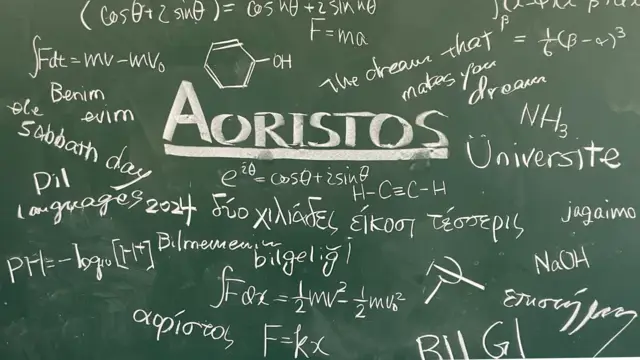

Aoristos — 中学生・高校生の探究団体
WORKS
つくったもの
ブラウザでそのまま使えます。登録はいりません。
ABOUT
Aoristos について
学校や学年を問わず、誰でも参加できる探究団体です。
- 01
一人ひとりの問いから
全員で同じ課題に取り組むのではなく、メンバーそれぞれが自分の問いを見つけ、自分のペースで探究を進めています。
- 02
学校をまたいで
本部は Discord の上にあり、決まった部屋はありません。地域ごとの支部と、学校ごとの班で活動しています。
- 03
名前の意味
ἀόριστος（アオリストス）は古代ギリシア語で「境界のない」「定まっていない」。文法用語のアオリストでもあります。
ORGANIZATION
支部と班
| 大阪支部 | 星の光班 |
|---|---|
| 兵庫支部 | 灘班 |
| 滋賀支部 | — |
| 奈良支部 | — |
NEWS
お知らせ
